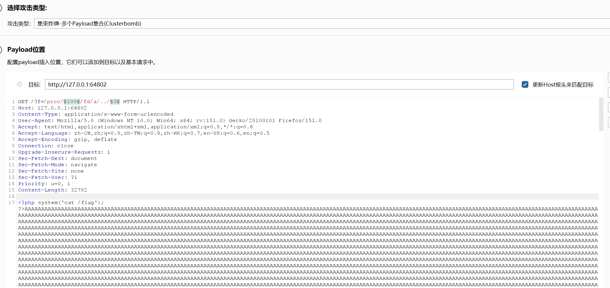
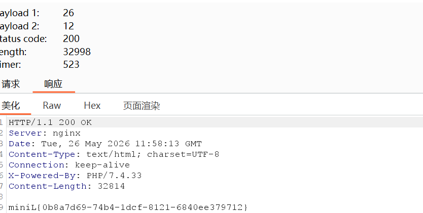
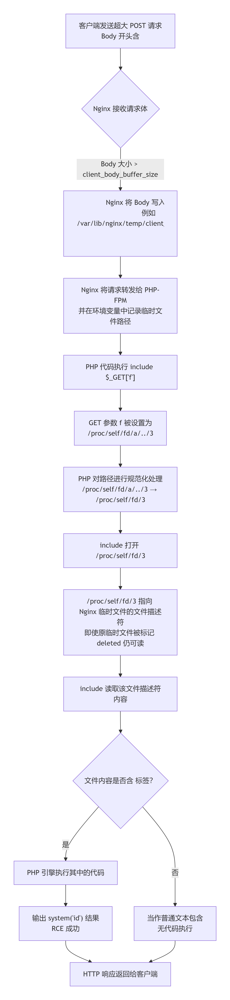
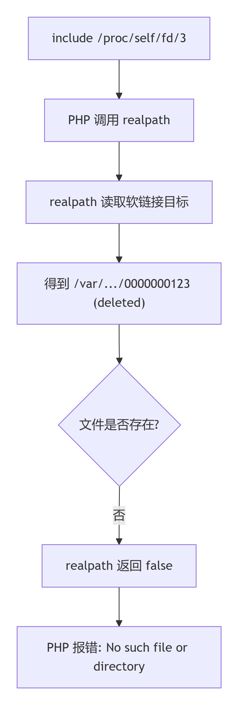
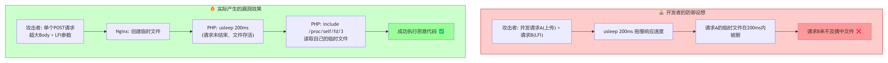
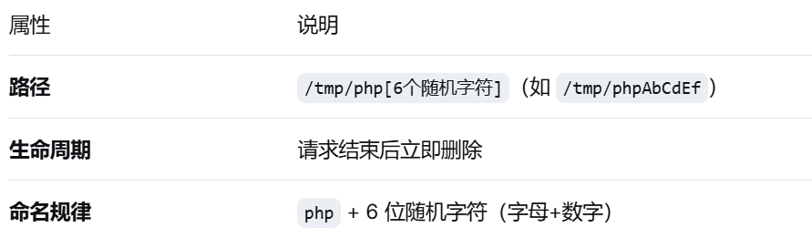
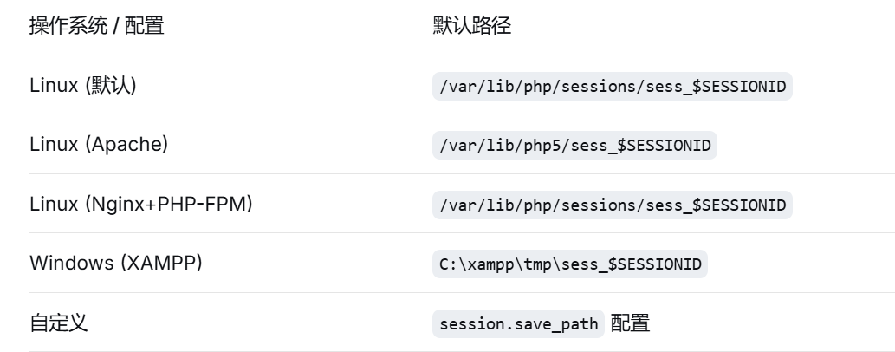
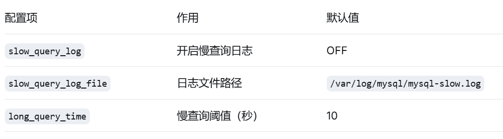
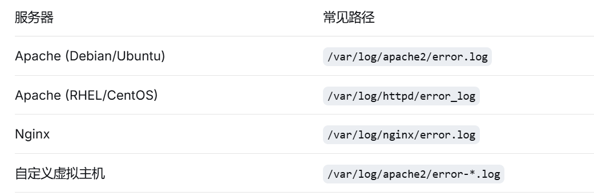

Hdphp wp
概括¶
利用 Nginx 的大请求体临时文件机制，结合 /proc/self/fd/ 文件描述符路径和路径规范化技巧，在单个请求中完成本地文件包含，实现远程代码执行
信息收集¶
- 题目信息
- 分析
$_GET['f']通过 GET 传入一个参数 f 必须 不匹配 正则中的黑名单。/flag|file|php|data|zip|phar|(proc|dev|bin|usr|var).{15,}/iflag|file|php|data|zip|phar→ 直接禁止这些字符串（大小写不敏感，/i）。(proc|dev|bin|usr|var).{15,}→ 禁止 /proc、/dev、/bin、/usr、/var 这些路径前缀，且后面必须跟 至少 15 个任意字符。【. 在正则中匹配除换行符外的任意字符】 例：/proc/123 长度不够 15 个字符，不会触发这个规则
usleep(200000)延迟 0.2 秒，防止简单的竞争条件攻击（比如快速写临时文件再 include）。include $_GET['f']典型的 本地文件包含（LFI） 漏洞,但几乎所有常用 PHP 伪协议（php://filter, php://input, data://, zip://, phar://）都被正则拦截了。
线索梳理¶
waf黑名单拦截了绝大部分LFI利用方法，但发现突破点/proc/$PID/fd/$fd可以绕过
Nginx 作为 Web 服务器有临时文件机制（大请求体触发）
临时文件路径由/proc/$PID/fd/$fd软连接指向
fd号爆破容易
路径规范化/proc/$pid/fd/a/../$fd绕过realpath 的存在性检查直接执行 open 系统调用
在burp中构造payload¶

爆破即可
完整流程¶

知识点整理¶
Nginx 请求体临时文件机制¶
- 核心原理：当 Nginx 接收 POST 请求时，请求体（body）的存储策略如下 默认配置下，client_body_buffer_size 为 8KB 或 16KB（取决于平台和架构）
- 临时文件路径规律 示例 目录结构中的 1 2 表示哈希层级：第一层1位，第二层2位。
- 临时文件生命周期 关键点 ：临时文件在 PHP 处理请求期间仍然存在，这就创造了时间窗口。
/proc/$pid/fd/ 文件描述符机制¶
- 什么是 /proc/self/fd/：是当前进程打开文件描述符的目录
注意 (deleted) 标记：当文件被删除但仍有进程持有文件描述符时，/proc/pid/fd/N 仍然可以访问文件内容，但会标记为 deleted
$ ls -la /proc/self/fd/ total 0 lrwx------ 1 www-data www-data 64 May 22 10:00 0 -> /dev/null lrwx------ 1 www-data www-data 64 May 22 10:00 1 -> /dev/null lrwx------ 1 www-data www-data 64 May 22 10:00 2 -> /dev/null lrwx------ 1 www-data www-data 64 May 22 10:00 3 -> /tmp/phpXXXXXXXX (deleted) lrwx------ 1 www-data www-data 64 May 22 10:00 4 -> socket:[12345] - 为什么 PHP 无法直接读取 deleted 文件
为了提示用户这个文件在目录结构中已经被删除，Linux 会在符号链接的目标后面加上 (deleted) 标记。例如显示为：/var/lib/nginx/temp/client_body/0000000001 (deleted) 当 /proc/self/fd/3 指向 (deleted) 文件时： realpath 解析 /proc/self/fd/3 → 得到 /var/lib/nginx/temp/client_body/0000000001 (deleted) realpath() 的工作逻辑：PHP 的 realpath() 函数的作用是规范化并解析路径，消除符号链接、.. 等冗余符号。当它读取 /proc/self/fd/3 这个软链接时，它会获取到内核返回的完整字符串（包含 (deleted) 后缀）。 由于 realpath() 并不具备“智能识别这是系统提示语”的能力，它会将 (deleted) 视为目标文件或目录名的实际组成部分，因此解析出的路径就变成了一个系统中根本不存在的怪异路径。 当使用 realpath 解析出那个带有 (deleted) 的路径后，如果尝试用 open() 或 PHP 的文件读取函数去打开这个解析后的新路径，必然会抛出 No such file or directory 错误 根本原因：因为磁盘上压根没有一个名字里真的带括号和 deleted 单词的文件。
// PHP 源码简化逻辑 zend_stream_open(filename) { realpath(filename) // 解析符号链接，获取真实路径 open(realpath) // 打开真实路径 }
正确的做法：绕过 realpath，直接使用原始的 /proc/self/fd/3 路径。此时 PHP 的文件操作函数会调用底层的 open() 系统调用，内核通过 /proc 虚拟文件系统识别出 fd/3 是一个文件描述符，从而直接访问该进程持有的文件句柄，完全不需要经过文件系统的路径查找。 - 绕过方法
想要绕过 realpath 的限制，核心思路就是利用 Linux 文件系统的特性，构造出一个“在 PHP 层面看起来是不同路径（从而躲过 realpath 的解析和 include_once/require_once 的记录），但最终在内核层面依然指向同一个文件描述符”的路径
路径规范化漏洞【添加 a/../ 前缀】
/proc/self/fd/a/../3，为什么可以绕过 - 面对 /proc/self/fd/3（标准路径） PHP的反应：它一眼就认出这是一个标准的文件描述符软链接。出于安全和规范的目的，它会尽职尽责地去查验这个链接到底指向哪里。于是，PHP 内部调用了 realpath() 函数去追踪它的真实物理地址。 结果：由于 Nginx 的临时文件在创建后就被 unlink（从目录树中移除），realpath() 查到的结果是带有 (deleted) 后缀的死路（例如 /var/lib/nginx/body/0000000001 (deleted)）。PHP 拿到这个“已删除”的地址后，认为文件不存在或无效，直接就拦截了请求，根本不会把这个死路交给内核去执行 open()。
- 面对 /proc/self/fd/a/../3（混淆路径） PHP 的反应：当它看到这个夹杂着 a/.. 的路径时，由于这不符合常规的软链接格式，PHP 无法立刻识别出它的本质。它会把这当成一个普通的、包含冗余符号的相对路径字符串。 结果：PHP 不会对这个陌生的字符串触发针对原 fd 的 realpath() 死链检查，而是简单地进行基础处理后，就把这个路径原封不动地交给了 Linux 内核，说道：“这个路径我看不太懂，你（内核）自己去处理吧。”
- Linux 内核的兜底操作 Linux Kernel 的反应：内核接收到 /proc/self/fd/a/../3 后，开始按部就班地解析。进入 fd 目录 -> 遇到 a（哪怕 a 不存在也没关系，因为马上就被抵消了）-> 遇到 .. 退回上一级（回到 fd 目录）-> 最终精准定位并打开文件描述符 3。 关键点：只要最后的数字 3 对应的文件句柄在当前进程中是打开状态，内核就能成功读取到数据，完全不受 Nginx 在文件系统层面是否将其标记为 (deleted) 的影响。
- 混淆路径骗过了 PHP 的 realpath() 审查机制，让 PHP误以为这是一个无需深度查验的普通路径，从而顺利交到了 Linux 内核手中，由内核强大的路径规范化能力完成了最终的“绝杀”。
时间竞争与 usleep 的影响¶
usleep(200000); // 200毫秒延迟 本意：为了防止攻击者利用时间差进行快速的自动化猜解或爆破。攻击者写多线程脚本，一边疯狂上传，一边疯狂爆破文件名，去赌那毫秒级的时间窗口（这就是所谓的“条件竞争”）。 usleep(200000);会导致单线程或多线程的爆破速度被严重拖慢，在脚本休眠期间，临时文件早就被系统清理掉了，因此传统的条件竞争手法会直接失效。 但本题的实际效果：结合 Nginx 超大请求体机制，Nginx 产生的超大请求体临时文件，它的删除规则是“整个 HTTP 请求彻底结束后才删”，因此usleep(200000);不会影响同一请求中的文件包含

扩展知识点¶
- 其他 LFI 临时文件利用方式
- PHP文件上传
原理
临时文件特征

利用条件 存在文件上传点（） 能够包含 /tmp/php* 路径 需要在请求结束前包含（竞争条件） - PHP Session 文件
原理：
Session 内容格式
user|s:30:"<?php system($_GET['cmd']);?>"; # PHP 默认序列化Session 文件位置
利用条件 Session 内容可控（如序列化数据中的用户输入） 知道 Session ID（可通过 Cookie 或 URL 获取） 目标路径可包含 - MySQL 慢查询日志
原理：MySQL 可以配置慢查询日志记录执行时间超过阈值的 SQL。
关键配置

限制条件 需要 FILE 权限或 root 权限修改 MySQL 配置 需要知道目标 Web 路径 日志文件可能被权限限制 - PEAR 临时文件 背景:PEAR（PHP Extension and Application Repository）是 PHP 的包管理器，某些环境会暴露 PEAR 命令接口 利用场景 临时文件路径 /tmp/pear/cache/pear_cache_ /tmp/pear/download/.tgz 利用方式 触发 PEAR 安装/缓存操作 临时文件包含可控制的 PHP 代码 LFI 包含该临时文件
- Apache错误日志
原理：Web 服务器会将错误信息写入日志文件，其中可能包含用户可控的内容（User-Agent、Referer 等）
日志文件位置

利用步骤- 触发错误日志写入
- 日志内容示例
- LFI 包含日志文件 注意事项 日志文件可能很大，需要 allow_url_include 配合？ 特殊字符（<, ?, >）可能被 HTML 编码 需要 Web 服务器有读取日志的权限
- 优先级排序 Session 文件 → 最容易，ID 可控 PHP 上传临时文件 → 需要竞态，但常见 Apache 错误日志 → 需要知道路径且可读 MySQL 慢查询 → 权限要求高 PEAR → 少见，仅特定环境
- 常用伪协议
- php://filter
- php://input
- file://
- data://
- /proc 文件系统的高级利用